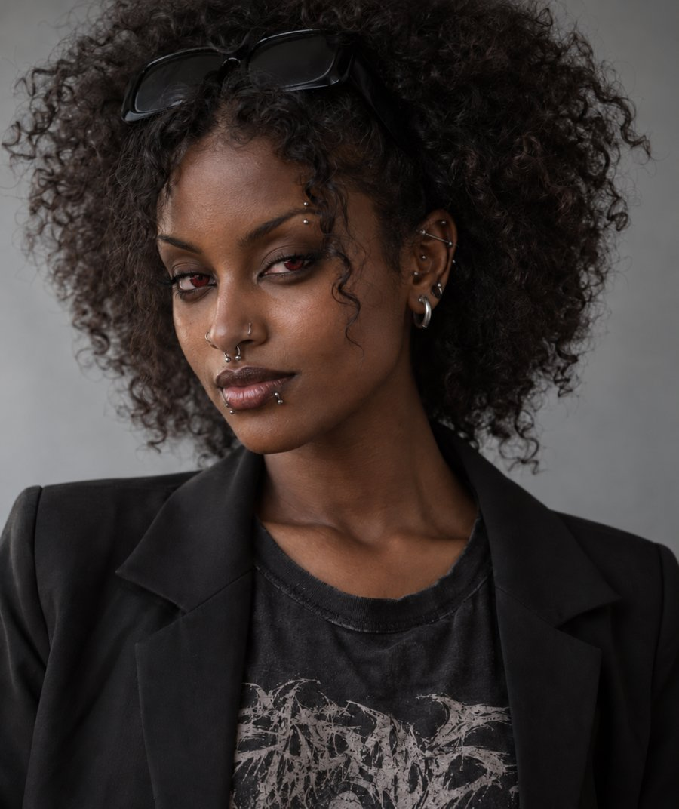
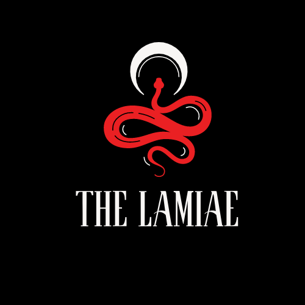

The Lamiae

The vampires of the Sekh Universe: older than the Sekh, never as organised, and bound to a hunger that began with a curse.
Lines without a tag are settled canon from the Lamiae reference (v3). Tags mark anything less settled.
At a glance
- Names
- Lamike (one) and Lamikehi (many) in both Vatrahu and Vatraxu. Ancient Greeks met them and called them Lamia and Lamiae, and the names are interchangeable. The Sekh say KauNamä’i in Nok. The Greek name gave the human world part of its idea of the vampire. Decided
- Age
- A Lamia stays the age they were when turned.
- Eyes
- Round pupils, like a human’s or an Anu’s, never the Sekh’s oval. Always in some shade of red.
- Blood
- A special type called A-e.
- Diet
- Human blood only, fresh from a living person. Animal blood makes them ill, and food makes them vomit. They have no digestive system. The first generation could eat ordinary food when young. See Origin.
- Heart
- A calcified heart that does not beat or circulate blood. The first generation were born with it. Turned Lamiae gain it during the Turning. Decided
- Lifespan
- Essentially immortal until killed or starved. On death they burn to ash or shrivel.
- Rule
- In name they answer to Hashaeqa. In practice there is no central leader.
- In Emsehurst
- Signatories to Pandora’s Pact since 1964. They are most visible in the SxSW districts.
Origin
The first Lamiae were born, not made: eight children of Hashaeqa. They are a species of their own, not four kinds of one species. Her other children, by other mothers, are separate peoples. See The four broods. Decided
The first generation was born with hearts already calcified, yet at first they lived much like humans. They could eat ordinary food, breathe, stand sunlight and have children. Over time the body calcifies further. Blood becomes necessary, tolerance for sunlight falls and fertility ends. Living in a more human way can slow the change, but it ends in death all the same, not in escape. Nearly all of the first generation died in the war of the Fall. Decided
Every Lamia since was made: a human turned by another Lamia, whose heart calcifies in the Turning. So there are two kinds, the born and the turned, and they stay physically distinct. Most of what follows on this page describes the Turned. The old title “eldest of the Verdoem races” stands. In the terms of the Aempaera they are Vatrajaħə, Vatrajaxo in Vatraxu. They are older than the Sekh and roughly their equal in power. Decided
No dates are given. The order of events is what counts. Decided
Turning
- Who can turn. Any Lamia more than a year old. Turned Lamiae cannot have children. The first generation could, early in life.
- How. The Lamia drinks from the person, feeds them Lamiae blood and deals a killing blow, such as a snapped neck. No consent and no ceremony are needed. The amount of blood is not precise. A human who dies with Lamiae blood in them turns on their own.
- The waking. In 24 to 48 hours the person wakes as a Lamia with intense bloodlust, or stays dead. The first week they are fairly uncontrollable.
- The cost. How a person died, and the state of mind they died in, shape lasting psychological damage. A victim of a brutal murder may develop a compulsion to recreate the trauma.
- After. A newly turned Lamia’s telepathy reaches only across a small room. Many find their own way. Those in covens often stay with their new kin.
Blood and addiction
- To humans, Lamiae blood in small amounts is euphoric and an aphrodisiac, like a powerful party drug, and it is profoundly addictive. The toll afterward is heavy. This is what produces the addicted tier of Bediens.
- It is toxic to everyone but humans, and it is toxic to the Sekh. It is also an antidote to Sekh blood in humans and other supernatural beings.
- Lamiae saliva is an aphrodisiac for prey and makes feeding pleasurable. It sickens the Vatrajarə and ranges from mild to fatal for the Sekh.
- Their blood is a major amplifier of witch spells, and for the strongest it may be required. See Contracts and power.
Bodies
- Breathing is optional, and most do it from reflex.
- Their skin is about twice as tough as a human’s. They are cold-blooded, like reptiles, and do not feel temperature or the elements unless magic reinforces them.
- Height and weight are frozen. Hair and nails return to the state they were in when the person was turned: a bald man never regrows hair, and long hair always grows back to its final length.
- They are stronger, but cannot show it without hurting themselves. The magic gives everyone the same strength whatever their build, so a weak teenager who throws a car breaks a bone doing it.
- Tattoos and piercings: holes close faster and ink fades faster. Anything from before the Turning stays.
- The spell preserves the body as it was. Lost limbs do not regrow, and impairments such as deafness or blindness may or may not heal. Anything lost as a Lamia can be reattached if it was not burned away.
- The tongue thickens and the taste buds die. The palate is centred on blood, and other food tastes awful.
- They can go about a week without blood, then comes madness, then a wizened husk.
Abilities
| Ability | What it does |
|---|---|
| Turning | After a Lamia’s first year. |
| Senses, speed and strength | All heightened, within the limit above. |
| Telepathy | Between Lamiae, strongest along your Sireline, the chain of vampires linking you to Hashaeqa. Those higher in your line can block those below. Range grows with age. |
| Temptation | Subliminal messages sent by telepathy, to humans and former humans only. Strength varies by individual. |
| Healing | A surface wound heals in minutes. They survive more fatal blows than the Sekh and can move a severed body to reattach the head within an hour. |
Emblem
